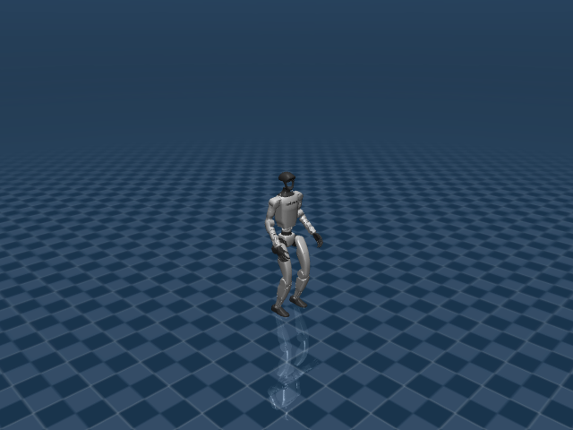

G1 Walk Flat
任务目标
训练 G1 人形机器人在平地上跟踪前进/横移/转向命令，并保持躯干高度、脚步相位和上肢姿态。

图片由
_tools/render_static_images.py使用src/unilab/assets/robots/g1/scene_flat.xml的 MuJoCo scene 离屏渲染生成；如果当前环境无法启用 EGL/OSMesa，生成 manifest 会记录失败原因。
证据索引
| 项目 | 内容 |
|---|---|
| 任务类别 | 运动控制 |
| 机器人 | g1 |
| 代表 scene | src/unilab/assets/robots/g1/scene_flat.xml |
| 代表源码 | src/unilab/envs/locomotion/g1/joystick.py |
| 代表 owner YAML | conf/appo/task/g1_walk_flat/mujoco.yaml |
| 动作维度 | 29 |
Registry 与 Owner
| 注册名 | 后端 | 配置类 | 配置源码 |
|---|---|---|---|
| G1WalkFlat | mujoco, motrix | G1WalkFlatCfg | src/unilab/envs/locomotion/g1/joystick.py |
| 算法组 | 后端 | training.task_name | owner YAML |
|---|---|---|---|
| appo | motrix | G1WalkFlat | conf/appo/task/g1_walk_flat/motrix.yaml |
| appo | mujoco | G1WalkFlat | conf/appo/task/g1_walk_flat/mujoco.yaml |
| flashsac | mujoco | G1WalkFlat | conf/offpolicy/task/flashsac/g1_walk_flat/mujoco.yaml |
| sac | motrix | G1WalkFlat | conf/offpolicy/task/sac/g1_walk_flat/motrix.yaml |
| sac | mujoco | G1WalkFlat | conf/offpolicy/task/sac/g1_walk_flat/mujoco.yaml |
| td3 | mujoco | G1WalkFlat | conf/offpolicy/task/td3/g1_walk_flat/mujoco.yaml |
| ppo | motrix | G1WalkFlat | conf/ppo/task/g1_walk_flat/motrix.yaml |
| ppo | mujoco | G1WalkFlat | conf/ppo/task/g1_walk_flat/mujoco.yaml |
代码级执行流
这部分不再用通用关键词套模板，而是为 g1_walk_flat 单独写源码导读。源码片段只负责提供证据；每节说明都围绕本任务自己的配置、状态、观测、动作和 reward 语义展开。
| 阶段 | 证据位置 | 代码级说明 |
|---|---|---|
| 1. Hydra owner | conf/appo/task/g1_walk_flat/mujoco.yaml | 训练命令先 compose owner YAML。这里确定 training.task_name、后端身份、obs_groups、reward scale 和 env override。 |
| 2. Registry 构造 Env | src/unilab/envs/locomotion/g1/joystick.py | @registry.envcfg 注册配置类，@registry.env 注册后端实现类；训练脚本只调用 registry，不直接 new 任务类。 |
| 3. Reset/初始状态 | src/unilab/assets/robots/g1/scene_flat.xml | env 从 scene keyframe 或 motion/grasp cache 取初态，再通过 reset randomization 改写 qpos/qvel/info。 |
| 4. Obs dict | src/unilab/envs/locomotion/g1/joystick.py | env 读取 backend 传感器和 info，返回 dict；learner 根据 obs_groups_spec 和 owner algo.obs_groups 选择 actor/critic 输入。 |
| 5. Action 到控制目标 | src/unilab/envs/locomotion/g1/joystick.py | policy 输出先按 action scale / 控制顺序映射到 actuator，再由 backend step 推进仿真。 |
| 6. Reward dispatch | src/unilab/envs/locomotion/g1/joystick.py | 源码把 reward key 映射到函数，owner YAML 的 scale 决定每项奖励/惩罚是否启用以及权重。 |
| 7. Termination | src/unilab/envs/locomotion/g1/joystick.py | env 根据高度、姿态、接触、参考轨迹误差、物体状态或能量阈值生成 done/terminated。 |
本任务阅读重点
| 阅读重点 |
|---|
| G1 平地行走是 29 DoF 人形 locomotion：不能用四足 gait 解释，必须读 gait_phase、上身 pose 和脚相位 reward。 |
| action 覆盖双腿、腰、双臂，默认角来自 stand keyframe，策略输出是全身相对角度目标。 |
| reward 的 pose/upper_body_pose/feet_phase 是 G1 特有阅读重点。 |
本任务注册入口
| 注册名 | 配置类 | 可用后端 |
|---|---|---|
| G1WalkFlat | G1WalkFlatCfg | mujoco, motrix |
本任务源码锚点
| 小节 | 源码文件 | 明确锚点 |
|---|---|---|
| 配置：G1WalkFlat | src/unilab/envs/locomotion/g1/joystick.py | G1WalkFlatCfg, G1WalkEnvCfg |
| Obs：全身本体 + gait phase | src/unilab/envs/locomotion/g1/joystick.py | obs_groups_spec, _compute_obs |
| Action：29 DoF 全身目标 | src/unilab/envs/locomotion/g1/joystick.py | apply_action, gait_phase |
| Reward：人形步态 | src/unilab/envs/locomotion/g1/joystick.py | _init_reward_functions, upper_body_pose |
| Termination/DR | src/unilab/envs/locomotion/g1/joystick.py | update_state, G1DomainRandConfig |
关键源码逐段解释（按本任务手写）
配置：G1WalkFlat
| 本任务人工导读 |
|---|
| cfg 指向 G1 flat scene，并指定 G1WalkRewardConfig。 |
| curriculum 和 control_config 在 env cfg 层表达，不放训练脚本。 |
G1WalkFlatCfg 只覆盖 flat 场景、控制配置和课程学习；通用 reset、command、domain_rand 仍在 G1WalkEnvCfg。 |
# src/unilab/envs/locomotion/g1/joystick.py
@registry.envcfg("G1WalkFlat")
# 将这个配置注册为 G1WalkFlat，Hydra owner 的 training.task_name 会通过 registry 找到它。
@dataclass
# dataclass 让配置字段能被 Hydra 组合和覆盖。
class G1WalkFlatCfg(G1WalkEnvCfg):
# 继承 G1WalkEnvCfg，说明 flat/rough 共用同一个 G1 行走 env 主体。
reward_config: G1WalkRewardConfig | None = None
# reward_config 由 owner YAML 注入；这里声明 flat walk 使用 G1WalkRewardConfig 这一类配置。
scene: SceneCfg = field(
# scene 字段覆盖父类默认值，明确当前任务使用平地场景。
default_factory=lambda: SceneCfg(
# default_factory 避免 dataclass 共享可变对象，并延迟创建 SceneCfg。
model_file=str(ASSETS_ROOT_PATH / "robots" / "g1" / "scene_flat.xml")
# model_file 指向 G1 平地 scene XML；keyframe、floor、传感器等场景资产都从这里加载。
)
)
control_config: G1WalkControlConfig = field(default_factory=G1WalkControlConfig) # type: ignore[assignment]
# control_config 控制 action_scale 和动作延迟等控制层参数，保持在 env cfg 层。
curriculum: CurriculumConfig = field(default_factory=_walk_curriculum)
# flat walk 默认启用 walk curriculum，训练脚本不用知道课程学习细节。
# src/unilab/envs/locomotion/g1/joystick.py
@dataclass
# G1WalkEnvCfg 是 flat/rough 行走任务的公共配置基类。
class G1WalkEnvCfg(G1BaseCfg):
# 继承 G1BaseCfg，复用 G1 机器人资产、关节顺序、传感器等基础约定。
scene: SceneCfg = field(
# 默认 scene 是平地；rough 子类会覆盖成 scene_rough.xml。
default_factory=lambda: SceneCfg(
model_file=str(ASSETS_ROOT_PATH / "robots" / "g1" / "scene_flat.xml")
# 这里仍然指向 flat scene，保证未覆盖时能直接跑平地任务。
)
)
max_episode_seconds: float = 20.0
# episode 最长 20 秒，超时由 runner/env contract 标记 truncated。
init_state: InitState = field(default_factory=InitState)
# 初始 root 高度等来自 InitState，G1 默认站立高度是 0.754。
commands: Commands = field(default_factory=Commands)
# Commands 决定线速度、角速度、heading 等命令采样范围。
reward_config: G1RewardConfig | None = None
# reward_config 必须由 owner YAML 提供；__init__ 中会显式检查不能为空。
domain_rand: G1DomainRandConfig = field(default_factory=G1DomainRandConfig)
# domain_rand 使用 G1 专用默认值，kp/kd 随机化默认打开。
gait_phase_init_mode: str = "offset_phase"
# reset 时左右脚 gait phase 默认相差 pi，形成交替步态。
reset_base_qvel_limit: float = 0.5
# reset 时 base qvel 的随机范围限制，避免初态速度过大。
curriculum: CurriculumConfig = field(default_factory=CurriculumConfig)
# 公共基类默认不启用 curriculum；flat 子类通过 _walk_curriculum 覆盖。
Obs：全身本体 + gait phase
| 本任务人工导读 |
|---|
| actor obs 为 98 维：gyro、gravity、29 维关节差、29 维速度、29 维动作、命令和相位。 |
| critic 增加 base linvel，总维度 101。 |
| actor 只拿可执行策略需要的信息；critic 多拿 3 维局部线速度做 value 估计。 |
# src/unilab/envs/locomotion/g1/joystick.py
@property
# obs_groups_spec 是 env contract，learner 会用它校验 obs dict 的维度。
def obs_groups_spec(self) -> dict[str, int]:
# 返回每个观测组的维度；这里 actor 组叫 "obs"，critic 组叫 "critic"。
# gyro(3) + gravity(3) + diff(29) + dof_vel(29) + action(29) + cmd(3) + phase(2) = 98
# 这行注释直接给出 98 维 actor obs 的组成。
return {"obs": 98, "critic": 101}
# critic 比 actor 多 3 维 linvel，所以是 101。# src/unilab/envs/locomotion/g1/joystick.py
def _compute_obs(
# 每个 step/reset 都通过这个函数组装 G1 walk 的 obs dict。
self, info: dict, linvel, gyro, gravity, dof_pos, dof_vel
# info 提供命令、动作历史、步态相位；backend 提供速度、IMU 和关节状态。
) -> dict[str, np.ndarray]:
# 必须返回 dict，满足 UniLab NpEnvState.obs 的 contract。
noise_cfg = self._cfg.noise_config
# 读取观测噪声配置，噪声只加到 actor 可见量上。
diff = dof_pos - self.default_angles
# 关节观测不是绝对角，而是相对默认站立角的偏差。
command = info["commands"]
# commands 是 reset/command sampler 写入的目标速度命令。
last_actions = info.get("current_actions", np.zeros_like(diff))
# 动作历史来自上一帧 action；第一次 reset 后没有则用全零。
gait_phase = info.get("gait_phase", np.zeros((self._num_envs, 2), dtype=get_global_dtype()))
# gait_phase 两维分别代表左右脚相位；缺失时用零相位兜底。
walk_profile = self._uses_walk_observation_profile()
# 根据 reward/profile 判断是否使用 walk 专用缩放。
noisy_gyro = self._obs_noise(gyro, noise_cfg.scale_gyro)
# actor gyro 加噪，提升策略对 IMU 噪声的鲁棒性。
noisy_gravity = self._obs_noise(gravity, noise_cfg.scale_gravity)
# actor gravity/upvector 加噪，避免策略过拟合完美姿态传感器。
noisy_diff = self._obs_noise(diff, noise_cfg.scale_joint_angle)
# actor 关节角偏差加噪，模拟编码器误差。
noisy_dof_vel = self._obs_noise(dof_vel, noise_cfg.scale_joint_vel)
# actor 关节速度加噪，模拟速度估计误差。
actor_gyro_scale = 0.25 if walk_profile else 1.0
# walk profile 下缩小 gyro 数值尺度，匹配对应 reward/profile 的训练分布。
actor_dof_vel_scale = 0.05 if walk_profile else 1.0
# walk profile 下大幅缩小关节速度尺度，避免速度项主导 actor 输入。
actor = np.concatenate(
# actor 输入由多个本体感知和任务命令特征拼接得到。
[
noisy_gyro * actor_gyro_scale,
# 3 维角速度，使用 actor 缩放和噪声。
-noisy_gravity,
# 3 维重力方向取负，保持与训练约定一致的 up-vector 表达。
noisy_diff,
# 29 维关节角相对默认姿态偏差。
noisy_dof_vel * actor_dof_vel_scale,
# 29 维关节速度，walk profile 下会缩放。
last_actions,
# 29 维上一帧动作，帮助策略感知动作变化和平滑性。
command,
# 3 维速度/转向命令。
gait_phase,
# 2 维左右脚相位，给策略显式步态时钟。
],
axis=1,
# 沿特征维拼接，batch 维保持 num_envs。
dtype=get_global_dtype(),
# 输出 dtype 统一为 UniLab 全局 dtype。
)
critic_gyro_scale = 0.25 if walk_profile else 1.0
# critic 使用和 actor 对齐的 gyro 缩放。
critic_dof_vel_scale = 0.05 if walk_profile else 1.0
# critic 使用和 actor 对齐的关节速度缩放。
critic_linvel_scale = 2.0 if walk_profile else 1.0
# walk profile 下放大 base linvel，让 value 更容易感知速度误差。
critic_base = np.concatenate(
# critic_base 先复用 actor 的主要结构，但不加 actor 噪声。
[
gyro * critic_gyro_scale,
# critic 看到无噪声 gyro，用于更稳定估值。
-gravity,
# critic 看到无噪声重力方向。
diff,
# critic 看到真实关节角偏差。
dof_vel * critic_dof_vel_scale,
# critic 看到真实关节速度。
last_actions,
# critic 同样使用动作历史。
command,
# critic 同样使用任务命令。
gait_phase,
# critic 同样使用左右脚相位。
],
axis=1,
# 沿特征维拼接。
dtype=get_global_dtype(),
# dtype 与 actor 保持一致。
)
critic = np.concatenate(
# critic 在 actor 同构信息之外追加 base 局部线速度。
[
critic_base,
# 前 98 维与 actor 结构相同，但使用更干净的状态量。
np.asarray(linvel * critic_linvel_scale, dtype=get_global_dtype()),
# 额外 3 维局部线速度只给 critic，不给 actor。
],
axis=1,
# 拼成 101 维 critic observation。
dtype=get_global_dtype(),
# 保持全局 dtype。
)
return {"obs": actor, "critic": critic}
# 返回 obs dict；训练配置的 algo.obs_groups 会选择 actor 使用 "obs"。Action：29 DoF 全身目标
| 本任务人工导读 |
|---|
| apply_action 更新 gait_phase 和动作历史。 |
| ctrl = action_scale * actions + default_angles，表示相对 stand 姿态的全身目标角。 |
| G1 Walk Flat 的 action 不控制 root，也不控制虚拟命令；29 维动作只映射到 G1 关节 PD 目标。 |
# src/unilab/envs/locomotion/g1/joystick.py
def apply_action(self, actions: np.ndarray, state: NpEnvState) -> np.ndarray:
# policy 输出进入 env 后，先更新动作历史和 gait phase，再生成关节控制目标。
state.info["last_actions"] = state.info.get("current_actions", np.zeros_like(actions))
# last_actions 保存上一帧动作；没有历史时用当前 action 形状的零数组。
state.info["current_actions"] = actions
# current_actions 保存本帧 policy 输出，后续 obs 和 action_rate reward 都会读取。
gait_phase = state.info.get(
# 从 info 中取左右脚 gait phase；reset provider 会初始化它。
"gait_phase", np.zeros((self._num_envs, 2), dtype=get_global_dtype())
# 如果 reset 还没写入，就使用 num_envs x 2 的零相位。
)
gait_phase[:, 0] = (gait_phase[:, 0] + self._gait_phase_delta) % (2 * np.pi)
# 左脚相位按控制周期前进，并用 2pi 取模保持周期性。
gait_phase[:, 1] = (gait_phase[:, 1] + self._gait_phase_delta) % (2 * np.pi)
# 右脚相位同步前进；初始 offset 决定左右脚是否错相。
state.info["gait_phase"] = gait_phase
# 写回 info，下一帧 obs 和 feet_phase reward 会使用更新后的相位。
ctrl: np.ndarray = actions * self._cfg.control_config.action_scale + self.default_angles
# policy action 先乘 action_scale，再加默认站立角，得到 29 维关节目标角。
return ctrl
# 返回给 backend 的控制量是关节 PD target，不包含 root 或命令维度。
# src/unilab/envs/locomotion/g1/joystick.py
def sample_gait_phase_pairs(rng, num_samples: int, mode: str) -> np.ndarray:
# reset 时采样左右脚相位，保证不同 env 的步态时钟不完全相同。
if mode == "independent":
# independent 模式下左右脚相位完全独立采样。
return np.asarray(
# 转成 np.ndarray，并统一 dtype。
np.column_stack(
# 把 left/right 两个一维相位数组拼成 num_samples x 2。
[
rng.uniform(0.0, 2.0 * np.pi, size=(num_samples,)),
# 左脚相位在完整周期内均匀采样。
rng.uniform(0.0, 2.0 * np.pi, size=(num_samples,)),
# 右脚相位也独立在完整周期内均匀采样。
]
),
dtype=get_global_dtype(),
# dtype 与 env 其它数组一致。
)
phase = rng.uniform(0.0, 2.0 * np.pi, size=(num_samples,))
# 默认 offset_phase 模式只采样一个基础相位。
return np.asarray(np.column_stack([phase, phase + np.pi]), dtype=get_global_dtype())
# 右脚相位比左脚相位多 pi，形成交替迈步。
Reward：人形步态
| 本任务人工导读 |
|---|
| reward map 包含 tracking、base_height、pose、upper_body_pose、feet_phase 等。 |
| 上肢姿态和脚相位让 G1 走路时不只是追速度。 |
reward key 只在这里映射函数；是否启用、权重多大由 owner YAML 的 reward.scales 决定。 |
# src/unilab/envs/locomotion/g1/joystick.py
def _init_reward_functions(self):
# 初始化 reward dispatch 表，run_reward_dispatch 会按 reward.scales 调用这些函数。
self._reward_fns: dict[str, Any] = {
# key 必须和 owner YAML 中 reward.scales 的名字一致。
"tracking_lin_vel": rewards.tracking_lin_vel,
# 线速度跟踪奖励，鼓励 base x/y 速度跟随 command。
"tracking_ang_vel": rewards.tracking_ang_vel,
# 角速度跟踪奖励，鼓励 yaw rate 跟随 command。
"forward_progress": rewards.forward_progress,
# 前进进度奖励，通常用于鼓励沿 x 方向移动。
"under_speed": rewards.under_speed,
# 低速惩罚/奖励项，用来处理命令速度下未达到目标的问题。
"lin_vel_z": rewards.lin_vel_z,
# 垂直速度惩罚，避免人形机器人上下弹跳。
"orientation": rewards.orientation,
# 姿态奖励/惩罚项，约束 base 姿态接近期望竖直。
"penalty_orientation": rewards.orientation,
# 同一个实现也可作为 penalty key，由 scale 的符号决定方向。
"ang_vel_xy": rewards.ang_vel_xy,
# roll/pitch 角速度惩罚，避免躯干横滚/俯仰抖动。
"penalty_ang_vel_xy": rewards.ang_vel_xy,
# penalty 命名用于新 reward profile，仍复用 ang_vel_xy 实现。
"action_rate": rewards.action_rate,
# 动作变化惩罚，鼓励相邻 action 平滑。
"penalty_action_rate": rewards.action_rate,
# penalty 命名和旧 action_rate 共用同一实现。
"base_height": rewards.base_height,
# base 高度奖励/惩罚，让 pelvis 高度接近期望站立高度。
"pose": rewards.weighted_pose,
# 全身 pose 偏差项，按 pose_weights 对 29 个关节加权。
"upper_body_pose": self._reward_upper_body_pose,
# 上半身姿态项，重点约束腰和手臂不要乱摆。
"penalty_close_feet_xy": self._reward_close_feet_xy,
# 双脚水平距离过近惩罚，避免左右脚互相绊住。
"penalty_feet_ori": self._reward_feet_ori,
# 脚部姿态惩罚，避免脚掌异常翻转。
"feet_phase": self._reward_feet_phase,
# 根据 gait_phase 期望脚高，鼓励摆动腿抬脚。
"feet_phase_contrast": self._reward_feet_phase_contrast,
# 对比左右脚高度差和相位目标，鼓励交替步态。
"feet_phase_contact": self._reward_feet_phase_contact,
# 用足底接触传感器检查支撑/摆动相位是否匹配。
"feet_double_stance": self._reward_feet_double_stance,
# 双脚同时支撑项，用于特定命令下稳定步态。
"feet_air_time": self._reward_feet_air_time,
# 脚离地时间项，鼓励合理摆动而不是拖地。
"alive": rewards.alive,
# 存活奖励，未终止时提供常数正奖励。
}# src/unilab/envs/locomotion/g1/joystick.py
def build_upper_body_pose_weights(pose_weights: list[float]) -> np.ndarray:
# 从全身 pose_weights 派生上半身专用权重。
weights = np.asarray(pose_weights, dtype=get_global_dtype()).copy()
# 复制一份，避免修改 reward_config 中原始列表。
weights[:12] = 0.0
# 前 12 个关节通常对应双腿；置零后 upper_body_pose 不再惩罚腿部。
return np.asarray(weights, dtype=get_global_dtype())
# 返回 29 维权重，供 _reward_upper_body_pose 与关节偏差逐元素相乘。
Termination/DR
| 本任务人工导读 |
|---|
| update_state 用 tilt 和 terrain-relative base height 判断终止。 |
| kp/kd、质量、COM、摩擦、重力等随机化来自 G1DomainRandConfig。 |
| termination 在 step 更新里计算；domain randomization 由 reset/interval provider 管理，不在这里解析资产。 |
# src/unilab/envs/locomotion/g1/joystick.py
def update_state(self, state: NpEnvState) -> NpEnvState:
# 每个仿真 step 后更新 reward、obs、terminated 和 curriculum 日志。
linvel = self.get_local_linvel()
# 读取 base 局部线速度，用于 reward 和 critic obs。
gyro = self.get_gyro()
# 读取 IMU 角速度，用于 obs 和姿态相关 reward。
gravity = self._backend.get_sensor_data(self._cfg.sensor.upvector)
# 从配置指定的 upvector 传感器读取重力/朝上方向。
dof_pos = self.get_dof_pos()
# 读取 29 个 G1 控制关节位置。
dof_vel = self.get_dof_vel()
# 读取 29 个 G1 控制关节速度。
max_tilt_rad = np.deg2rad(self._reward_cfg.max_tilt_deg)
# 把配置中的最大倾斜角从度转成弧度，使用 numpy 库函数。
tilt = np.arccos(np.clip(gravity[:, 2], -1, 1))
# 根据 upvector 的 z 分量计算倾斜角；clip 防止浮点误差导致 arccos 越界。
terminated = np.logical_or(
# 终止条件是“倾斜过大”或“base 太低”任一成立。
tilt > max_tilt_rad,
# pelvis/base 倾斜超过阈值说明人形已经跌倒或严重失稳。
self._terrain_relative_base_height() < self._reward_cfg.min_base_height,
# base 高度低于阈值也视为跌倒。
)
reward = self._compute_reward(state.info, linvel, gyro, gravity, dof_pos, dof_vel)
# 用当前状态量和 info 计算所有 reward 项并按 scale 汇总。
obs = self._compute_obs(state.info, linvel, gyro, gravity, dof_pos, dof_vel)
# 用同一批状态量构造下一帧 actor/critic obs。
state = state.replace(obs=obs, reward=reward, terminated=terminated)
# NpEnvState 是不可变风格更新；replace 写入 obs/reward/terminated。
done = state.terminated | state.truncated
# done 同时包含失败终止和超时截断。
if self._episode_tracker is None or self._penalty_curriculum is None or not np.any(done):
# curriculum 未启用或当前没有 episode 结束时，直接返回。
return state
# 没有 curriculum 更新需求，避免多余计算。
done_indices = np.where(done)[0]
# 找出本 step 结束的并行 env 下标。
episode_lengths = state.info["steps"][done_indices] + 1
# steps 从 0 计数，所以 episode 长度需要加 1。
self._episode_tracker.update(episode_lengths)
# 用完成 episode 的长度更新滑动统计。
self._penalty_curriculum.update(self._episode_tracker.average_length)
# 根据平均 episode 长度调整 penalty curriculum scale。
if "log" not in state.info:
# 如果 info 里还没有 log 字典，就创建一个。
state.info["log"] = {}
# log 字段供训练器记录到日志系统。
state.info["log"]["curriculum/average_episode_length"] = float(
# 写入 curriculum 平均 episode 长度。
self._episode_tracker.average_length
# 当前 episode length tracker 的平均值。
)
state.info["log"]["curriculum/penalty_scale"] = float(
# 写入当前 penalty scale，便于观察课程学习进度。
self._penalty_curriculum.current_scale
# PenaltyCurriculum 当前使用的缩放系数。
)
return state
# 返回更新后的 NpEnvState。# src/unilab/envs/locomotion/g1/joystick.py
@dataclass
# G1DomainRandConfig 是 G1 walk 对通用 locomotion domain_rand 的专用覆盖。
class G1DomainRandConfig(DomainRandConfig):
# 继承通用 DomainRandConfig，质量、COM、摩擦、push 等字段仍来自父类。
randomize_kp: bool = True
# G1 walk 默认开启 actuator kp 随机化，增强对 PD 刚度误差的鲁棒性。
kp_multiplier_range: list[float] = field(default_factory=lambda: [0.9, 1.1])
# kp 会在原始 gain 基础上乘以 0.9 到 1.1 的随机系数。
randomize_kd: bool = True
# G1 walk 默认开启 actuator kd 随机化，覆盖阻尼误差。
kd_multiplier_range: list[float] = field(default_factory=lambda: [0.9, 1.1])
# kd 同样按 0.9 到 1.1 的范围随机缩放。
Agent
Agent 输出 29 维关节目标，覆盖双腿、腰和双臂。
训练入口通过 owner YAML 决定注册 env、后端身份和算法参数；CLI 应使用 --sim 选择 backend owner，而不是单独 override training.sim_backend。
# conf/appo/task/g1_walk_flat/mujoco.yaml
training:
task_name: G1WalkFlat
sim_backend: mujoco
algo:
obs_groups: {}
num_envs: 4096
max_iterations: 5000Env
Env 使用 G1WalkEnv，在 G1BaseEnv 上增加 gait phase、命令采样和 locomotion reward。
Env 必须遵守 NpEnv contract：reset() 返回 (obs_dict, info_dict)，obs 是 dict，obs_groups_spec 决定 learner 使用哪些观测组。
# src/unilab/envs/locomotion/g1/joystick.py
@dataclass
class G1WalkRewardConfig(G1RewardConfig):
"""对齐 holosoma G1 walking 奖励权重。"""
@registry.envcfg("G1WalkFlat")
@dataclass
class G1WalkFlatCfg(G1WalkEnvCfg):
reward_config: G1WalkRewardConfig | None = None
scene: SceneCfg = field(
default_factory=lambda: SceneCfg(Obs
观测包含命令、本体速度/角速度、重力、关节误差/速度、动作历史和 gait phase；critic 额外使用 base linvel。
Obs 字段级拆解
下面的表格把源码里的观测拼接逻辑拆成语义字段。维度如果依赖 history、terrain scan 或 motion body 数量，文档会写成“规模”而不是硬编码，避免和配置漂移。
| 观测字段 | 维度/规模 | 代码来源 | 中文说明 |
|---|---|---|---|
| command | 3 维 | Commands | 期望前进、横移和转向速度。 |
| gait_phase | 2 或更多 | gait_phase / phase target | 左右腿步态相位，决定摆动脚和支撑脚的节律。 |
| gyro / gravity | 各 3 维 | IMU 传感器 | 反映躯干角速度和倾斜方向，是防摔核心输入。 |
| dof_pos - default | nu 维 | keyframe stand 差值 | 全身关节相对默认站姿的偏移。 |
| dof_vel | nu 维 | backend dof velocity | 全身关节速度。 |
| last_actions | nu 维 | 动作历史 | 让策略观察自身上一帧控制目标。 |
| critic base linvel | 3 维 | critic 特权观测 | 训练 critic 使用真实 base 线速度，提高 value 学习稳定性。 |
owner YAML 中的 algo.obs_groups 说明算法从 env obs dict 中读取哪些组。没有写入 owner 的字段保持 env cfg 默认值，文档不臆造未配置项。
# conf/appo/task/g1_walk_flat/mujoco.yaml
algo:
obs_groups:
{}
代码侧观测通常在 _get_obs、_build_obs、obs_groups_spec 或 base env 中组装：
# src/unilab/envs/locomotion/g1/joystick.py
dr_provider = G1WalkDomainRandomizationProvider(base_kp=base_kp, base_kd=base_kd)
else:
dr_provider = G1WalkDomainRandomizationProvider()
self._init_domain_randomization(dr_provider)
@property
def obs_groups_spec(self) -> dict[str, int]:
# gyro(3) + gravity(3) + diff(29) + dof_vel(29) + action(29) + cmd(3) + phase(2) = 98
return {"obs": 98, "critic": 101}
def _init_reward_functions(self):
self._reward_fns: dict[str, Any] = {
"tracking_lin_vel": rewards.tracking_lin_vel,源码锚点拆解：
| 源码符号 | 中文说明 |
|---|---|
| obs_groups_spec | 声明 obs dict 中各观测组的维度，是 wrapper/learner 对齐观测的契约。 |
| _compute_obs | 读取 backend 传感器和 info 字段，拼接 actor/critic 观测。 |
Action
动作维度由 G1 XML actuator 数决定，scene 编译得到 nu=29。
Action 逐维拆解
G1 的 action 覆盖 29 个可控关节：腿、腰和双臂都参与控制。行走任务更强调腿部和腰部稳定，motion tracking 则让上肢也跟随参考动作。
当前代表 scene 编译出的 action 维度为 29。下表来自 MuJoCo 编译模型的 actuator 顺序，也就是策略输出维度和执行器维度的对应关系。
| Action 维度 | 执行器 | 驱动关节 | 中文含义 | 控制/限制说明 |
|---|---|---|---|---|
| 0 | left_hip_pitch_joint | left_hip_pitch_joint | 左髋俯仰关节 | XML 未显式限制，实际由 env 缩放/默认角和 backend 控制 |
| 1 | left_hip_roll_joint | left_hip_roll_joint | 左髋侧摆关节 | XML 未显式限制，实际由 env 缩放/默认角和 backend 控制 |
| 2 | left_hip_yaw_joint | left_hip_yaw_joint | 左髋偏航关节 | XML 未显式限制，实际由 env 缩放/默认角和 backend 控制 |
| 3 | left_knee_joint | left_knee_joint | 左膝关节 | XML 未显式限制，实际由 env 缩放/默认角和 backend 控制 |
| 4 | left_ankle_pitch_joint | left_ankle_pitch_joint | 左踝俯仰关节 | XML 未显式限制，实际由 env 缩放/默认角和 backend 控制 |
| 5 | left_ankle_roll_joint | left_ankle_roll_joint | 左踝侧摆关节 | XML 未显式限制，实际由 env 缩放/默认角和 backend 控制 |
| 6 | right_hip_pitch_joint | right_hip_pitch_joint | 右髋俯仰关节 | XML 未显式限制，实际由 env 缩放/默认角和 backend 控制 |
| 7 | right_hip_roll_joint | right_hip_roll_joint | 右髋侧摆关节 | XML 未显式限制，实际由 env 缩放/默认角和 backend 控制 |
| 8 | right_hip_yaw_joint | right_hip_yaw_joint | 右髋偏航关节 | XML 未显式限制，实际由 env 缩放/默认角和 backend 控制 |
| 9 | right_knee_joint | right_knee_joint | 右膝关节 | XML 未显式限制，实际由 env 缩放/默认角和 backend 控制 |
| 10 | right_ankle_pitch_joint | right_ankle_pitch_joint | 右踝俯仰关节 | XML 未显式限制，实际由 env 缩放/默认角和 backend 控制 |
| 11 | right_ankle_roll_joint | right_ankle_roll_joint | 右踝侧摆关节 | XML 未显式限制，实际由 env 缩放/默认角和 backend 控制 |
| 12 | waist_yaw_joint | waist_yaw_joint | 腰偏航关节 | XML 未显式限制，实际由 env 缩放/默认角和 backend 控制 |
| 13 | waist_roll_joint | waist_roll_joint | 腰侧摆关节 | XML 未显式限制，实际由 env 缩放/默认角和 backend 控制 |
| 14 | waist_pitch_joint | waist_pitch_joint | 腰俯仰关节 | XML 未显式限制，实际由 env 缩放/默认角和 backend 控制 |
| 15 | left_shoulder_pitch_joint | left_shoulder_pitch_joint | 左肩俯仰关节 | XML 未显式限制，实际由 env 缩放/默认角和 backend 控制 |
| 16 | left_shoulder_roll_joint | left_shoulder_roll_joint | 左肩侧摆关节 | XML 未显式限制，实际由 env 缩放/默认角和 backend 控制 |
| 17 | left_shoulder_yaw_joint | left_shoulder_yaw_joint | 左肩偏航关节 | XML 未显式限制，实际由 env 缩放/默认角和 backend 控制 |
| 18 | left_elbow_joint | left_elbow_joint | 左肘关节 | XML 未显式限制，实际由 env 缩放/默认角和 backend 控制 |
| 19 | left_wrist_roll_joint | left_wrist_roll_joint | 左腕侧摆关节 | XML 未显式限制，实际由 env 缩放/默认角和 backend 控制 |
| 20 | left_wrist_pitch_joint | left_wrist_pitch_joint | 左腕俯仰关节 | XML 未显式限制，实际由 env 缩放/默认角和 backend 控制 |
| 21 | left_wrist_yaw_joint | left_wrist_yaw_joint | 左腕偏航关节 | XML 未显式限制，实际由 env 缩放/默认角和 backend 控制 |
| 22 | right_shoulder_pitch_joint | right_shoulder_pitch_joint | 右肩俯仰关节 | XML 未显式限制，实际由 env 缩放/默认角和 backend 控制 |
| 23 | right_shoulder_roll_joint | right_shoulder_roll_joint | 右肩侧摆关节 | XML 未显式限制，实际由 env 缩放/默认角和 backend 控制 |
| 24 | right_shoulder_yaw_joint | right_shoulder_yaw_joint | 右肩偏航关节 | XML 未显式限制，实际由 env 缩放/默认角和 backend 控制 |
| 25 | right_elbow_joint | right_elbow_joint | 右肘关节 | XML 未显式限制，实际由 env 缩放/默认角和 backend 控制 |
| 26 | right_wrist_roll_joint | right_wrist_roll_joint | 右腕侧摆关节 | XML 未显式限制，实际由 env 缩放/默认角和 backend 控制 |
| 27 | right_wrist_pitch_joint | right_wrist_pitch_joint | 右腕俯仰关节 | XML 未显式限制，实际由 env 缩放/默认角和 backend 控制 |
| 28 | right_wrist_yaw_joint | right_wrist_yaw_joint | 右腕偏航关节 | XML 未显式限制，实际由 env 缩放/默认角和 backend 控制 |
控制参数来自 owner YAML 的 env.control_config，缺省值由对应 env cfg/dataclass 提供。
| 配置字段 | 当前值 | 中文说明 |
|---|---|---|
| action_scale | 0.25 | 策略输出到目标关节角的缩放系数。 |
# conf/appo/task/g1_walk_flat/mujoco.yaml
env:
control_config:
action_scale: 0.25
动作到执行器的实际映射由 backend 的 actuator control range 和 env 的 apply_action/控制函数完成：
# src/unilab/envs/locomotion/g1/joystick.py
diff = ctx.dof_pos - self.default_angles
return np.asarray(
np.sum(self._upper_body_pose_weights * np.square(diff), axis=1),
dtype=get_global_dtype(),
)
def apply_action(self, actions: np.ndarray, state: NpEnvState) -> np.ndarray:
state.info["last_actions"] = state.info.get("current_actions", np.zeros_like(actions))
state.info["current_actions"] = actions
gait_phase = state.info.get(
"gait_phase", np.zeros((self._num_envs, 2), dtype=get_global_dtype())
)源码锚点拆解：
| 源码符号 | 中文说明 |
|---|---|
| apply_action | 把策略输出缩放为执行器控制目标。 |
Reward
reward 使用 G1RewardConfig，包括速度跟踪、base height、feet phase、pose、动作变化和限位惩罚。
Reward 逐项拆解
reward scale 以 owner YAML 的 reward.scales 为真源；源码中的 RewardConfig 描述可用字段，训练脚本只做 Hydra 组装和注入。正数通常表示奖励，负数通常表示惩罚，0 表示该项在当前 owner 中关闭或仅保留接口。
| Reward key | Scale | 方向 | 中文含义 |
|---|---|---|---|
| tracking_lin_vel | 2.0 | 奖励 | 线速度命令跟踪奖励，鼓励机器人实际平面速度贴近 joystick/命令速度。 |
| tracking_ang_vel | 0.2 | 奖励 | 角速度命令跟踪奖励，鼓励 yaw 角速度贴近转向命令。 |
| feet_phase | 1.0 | 奖励 | 步态相位奖励，鼓励左右脚按期望相位摆动/支撑。 |
| lin_vel_z | -1.0 | 惩罚 | 竖直速度惩罚，限制 base 上下弹跳。 |
| ang_vel_xy | -0.25 | 惩罚 | 横滚/俯仰角速度惩罚，抑制身体剧烈摇摆。 |
| base_height | -500.0 | 惩罚 | 身体高度项，使 base 高度保持在任务目标附近。 |
| orientation | -5.0 | 惩罚 | 姿态项，通常基于重力投影或目标朝向惩罚倾斜。 |
| action_rate | -0.01 | 惩罚 | 动作变化惩罚，抑制相邻控制步之间的目标突变。 |
| pose | -0.1 | 惩罚 | 默认姿态或参考姿态约束，防止无关关节偏离可用构型。 |
# conf/appo/task/g1_walk_flat/mujoco.yaml
reward:
scales:
tracking_lin_vel: 2.0
tracking_ang_vel: 0.2
feet_phase: 1.0
lin_vel_z: -1.0
ang_vel_xy: -0.25
base_height: -500.0
orientation: -5.0
action_rate: -0.01
pose: -0.1
tracking_sigma: 0.25
gait_frequency: 1.5
feet_phase_swing_height: 0.09
feet_phase_tracking_sigma: 0.008
base_height_target: 0.754
min_base_height: 0.55
max_tilt_deg: 25.0
pose_weights:
- 0.01
- 1.0
- 5.0
- 0.01
- 5.0
- 5.0
- 0.01
- 1.0
- 5.0
- 0.01
- 5.0
- 5.0
- 50.0
- 50.0
- 50.0
- 50.0
- 50.0
- 50.0
- 50.0
- 50.0
- 50.0
- 50.0
- 50.0
- 50.0
- 50.0
- 50.0
- 50.0
- 50.0
- 50.0
源码中的 reward 入口：
# src/unilab/envs/locomotion/g1/joystick.py
def compute_forward_command_mask(commands: np.ndarray) -> np.ndarray:
return np.asarray(np.maximum(commands[:, 0], 0.0) > 1.0e-6, dtype=get_global_dtype())
@dataclass
class G1RewardConfig:
scales: dict[str, float]
tracking_sigma: float
gait_frequency: float
feet_phase_swing_height: float
feet_phase_tracking_sigma: float
base_height_target: float源码锚点拆解：
| 源码符号 | 中文说明 |
|---|---|
| G1RewardConfig: | 声明 reward 可用参数和默认 scale。 |
| G1WalkLegacyRewardConfig | 声明 reward 可用参数和默认 scale。 |
| _init_reward_functions | 把 reward 名称映射到源码函数，owner YAML 的 scale 会按这些 key 分发。 |
| _build_reward_context | 单个 reward 项的实现函数，通常返回每个 env 的 reward 向量。 |
| _compute_reward | reward 相关源码锚点。 |
| _reward_feet_phase | 单个 reward 项的实现函数，通常返回每个 env 的 reward 向量。 |
| _gait_reward_gate | 单个 reward 项的实现函数，通常返回每个 env 的 reward 向量。 |
| _reward_feet_phase_contrast | 单个 reward 项的实现函数，通常返回每个 env 的 reward 向量。 |
| _reward_feet_phase_contact | 单个 reward 项的实现函数，通常返回每个 env 的 reward 向量。 |
| _reward_feet_double_stance | 单个 reward 项的实现函数，通常返回每个 env 的 reward 向量。 |
| _reward_feet_ori | 单个 reward 项的实现函数，通常返回每个 env 的 reward 向量。 |
| _reward_close_feet_xy | 单个 reward 项的实现函数，通常返回每个 env 的 reward 向量。 |
初始状态
初始状态来自 stand keyframe，并可采样 gait phase 与 base qvel。
机器人默认姿态来自 scene/task fragment 中的 keyframe；任务 reset 在此基础上加入命令、motion reference、物体状态或随机化。
<!-- src/unilab/assets/robots/g1/scene_flat.xml -->
<contact name="right_foot_contact_3" geom1="floor" geom2="right_foot_contact_3_geom" data="found" num="1" reduce="mindist"/>
</sensor>
<keyframe>
<!-- <key name="home"
qpos="
0 0 0.79# src/unilab/envs/locomotion/g1/joystick.py
)
phase = rng.uniform(0.0, 2.0 * np.pi, size=(num_samples,))
return np.asarray(np.column_stack([phase, phase + np.pi]), dtype=get_global_dtype())
def sample_reset_base_qvel(rng, num_samples: int, limit: float) -> np.ndarray:
return np.asarray(rng.uniform(-limit, limit, size=(num_samples, 6)), dtype=get_global_dtype())
def build_upper_body_pose_weights(pose_weights: list[float]) -> np.ndarray:
weights = np.asarray(pose_weights, dtype=get_global_dtype()).copy()
weights[:12] = 0.0终止条件
终止通过最小 base 高度和最大倾斜角控制。
终止条件通常由 env 源码中的 _compute_termination(s)、reward config 阈值和 max_episode_seconds 共同决定。
# conf/appo/task/g1_walk_flat/mujoco.yaml
env:
{}
reward:
min_base_height: 0.55
max_tilt_deg: 25.0
# src/unilab/envs/locomotion/g1/joystick.py
linvel = self.get_local_linvel()
gyro = self.get_gyro()
gravity = self._backend.get_sensor_data(self._cfg.sensor.upvector)
dof_pos = self.get_dof_pos()
dof_vel = self.get_dof_vel()
max_tilt_rad = np.deg2rad(self._reward_cfg.max_tilt_deg)
tilt = np.arccos(np.clip(gravity[:, 2], -1, 1))
terminated = np.logical_or(
tilt > max_tilt_rad,
self._terrain_relative_base_height() < self._reward_cfg.min_base_height,
)
reward = self._compute_reward(state.info, linvel, gyro, gravity, dof_pos, dof_vel)
obs = self._compute_obs(state.info, linvel, gyro, gravity, dof_pos, dof_vel)
state = state.replace(obs=obs, reward=reward, terminated=terminated)域随机化
domain_rand 可随机 kp/kd、质量、COM、重力、摩擦、推力和 reset joint。
域随机化只在 reset/interval 等冷路径触发，不在 step 热路径解析资产或探测 backend 私有能力。
域随机化字段拆解
| 配置字段 | 当前值 | 中文说明 |
|---|
# conf/appo/task/g1_walk_flat/mujoco.yaml
env:
domain_rand:
{}
# src/unilab/envs/locomotion/g1/joystick.py
from unilab.envs.locomotion.common import rewards
from unilab.envs.locomotion.common.commands import (
Commands,
sample_heading_commands,
zero_small_xy_commands,
)
from unilab.envs.locomotion.common.domain_rand import DomainRandConfig
from unilab.envs.locomotion.common.dr_provider import LocomotionDRProvider
from unilab.envs.locomotion.common.rewards import RewardContext
from unilab.envs.locomotion.g1.base import G1BaseCfg, G1BaseEnv
@dataclass